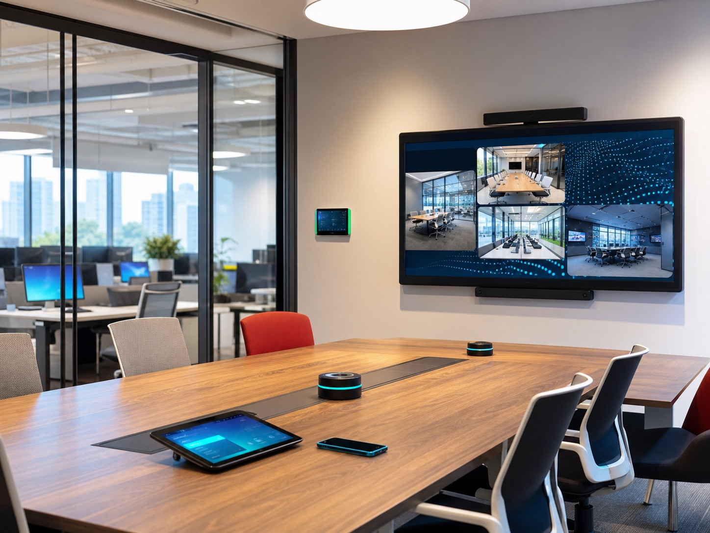
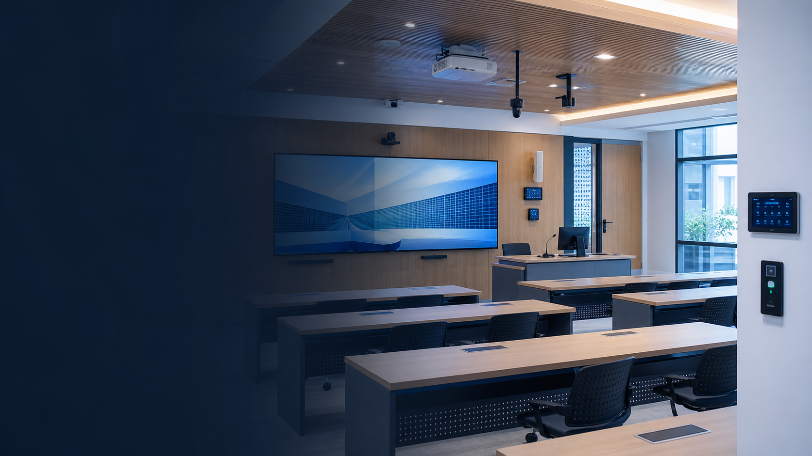
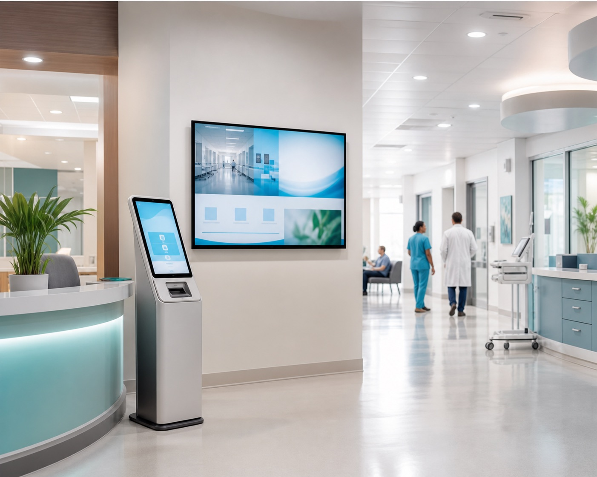
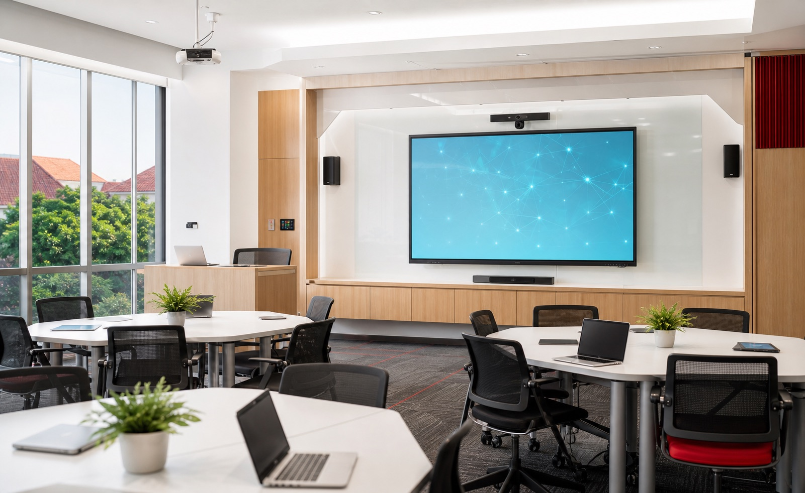

Kebutuhan Multi Fungsi
Ruang digunakan untuk bekerja, menerima tamu, berdiskusi, dan melakukan pertemuan.
Memuat Ruang Pimpinan
Ruang Pimpinan
Ciptakan ruang pimpinan yang nyaman, fungsional, dan representatif untuk mendukung aktivitas kerja, komunikasi, serta pengambilan keputusan secara profesional.
Konsultasikan Kebutuhan Anda
Tantangan
Setiap aktivitas memiliki kebutuhan berbeda yang perlu dipertimbangkan sejak awal agar ruang tetap nyaman, fungsional, dan representatif.
Ruang digunakan untuk bekerja, menerima tamu, berdiskusi, dan melakukan pertemuan.
Beberapa aktivitas membutuhkan ruang yang lebih tenang.
Furniture perlu menyesuaikan ukuran ruang tanpa menghambat sirkulasi.
Ruang juga digunakan untuk menerima tamu dan mitra.
Area yang tidak terencana dapat membuat aktivitas saling mengganggu.
Kurangnya privasi dapat mengganggu fokus dan komunikasi.
Pemilihan yang kurang tepat dapat menghambat sirkulasi.
Penataan yang tidak selaras dapat mengurangi kesan ruang.
Solusi Kami
Setiap elemen dalam ruang pimpinan perlu saling mendukung. Mulai dari area kerja, tempat menerima tamu, hingga kebutuhan presentasi dapat dirancang dalam satu ruang yang nyaman, fungsional, dan representatif.
Mendukung aktivitas kerja dengan desain yang profesional dan fungsional.
Lihat detail
Memberikan kenyamanan dan dukungan ergonomis selama bekerja.
Lihat detail
Menghadirkan kenyamanan untuk menerima tamu dalam suasana profesional.
Lihat detailMendukung presentasi, diskusi, dan kolaborasi secara interaktif.
Lihat detail
Menyediakan tempat duduk nyaman untuk tamu dan rekan berdiskusi.
Lihat detail01 — Interactive Flat Panel
Smart Board menghadirkan fasilitas interaktif untuk mendukung presentasi, diskusi, dan penyampaian informasi. Teknologi ini dapat menjadi bagian dari ruang pimpinan tanpa menghilangkan kesan profesional pada ruangan.
02 — Meja Pimpinan
Meja pimpinan menjadi elemen utama dalam area kerja. Pilihan desain, ukuran, dan material dapat disesuaikan dengan kebutuhan aktivitas serta karakter ruang agar memberikan area kerja yang nyaman sekaligus terlihat profesional.
03 — Kursi Pimpinan
Kursi pimpinan dirancang untuk memberikan kenyamanan selama menjalankan aktivitas kerja. Pemilihan kursi yang tepat dapat mendukung postur tubuh sekaligus melengkapi tampilan meja dan keseluruhan ruang.
04 — Sofa Tamu
Sofa tamu menyediakan area duduk yang nyaman dan representatif untuk menerima tamu, melakukan percakapan informal, maupun membangun suasana komunikasi yang lebih santai.
05 — Kursi Hadap
Kursi hadap ditempatkan di area meja pimpinan untuk mendukung komunikasi langsung dengan tamu, rekan kerja, maupun anggota tim dalam suasana yang lebih formal.
FAQ
Kebutuhan ruang pimpinan dapat mencakup meja dan kursi pimpinan, sofa tamu, kursi hadap, Smart Board, serta furniture dan fasilitas pendukung lainnya sesuai fungsi dan ukuran ruangan.
Furniture dapat dipilih berdasarkan ukuran ruang, aktivitas pimpinan, jumlah pengguna, kenyamanan, serta konsep interior yang ingin diterapkan.
Bisa. Ruang pimpinan dapat dirancang untuk mendukung meeting dan diskusi dengan menyediakan area duduk serta fasilitas yang sesuai.
Smart Board dapat digunakan untuk presentasi, diskusi, penyampaian informasi, hingga mendukung kolaborasi dan meeting secara interaktif.
Ya. Pemilihan ukuran, desain, dan penataan furniture dapat disesuaikan dengan kondisi ruang agar tetap nyaman, proporsional, dan memiliki sirkulasi yang baik.
Kesan profesional dapat dibangun melalui perpaduan furniture, tata ruang, material, warna, dan teknologi yang selaras dengan karakter organisasi.
Rancang ruang pimpinan yang nyaman, profesional, dan representatif dengan furniture serta teknologi yang sesuai dengan kebutuhan ruang dan aktivitas pimpinan.